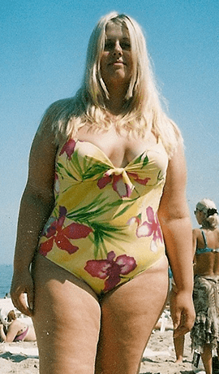

Как быстро похудеть после родов?
История молодой мамы
19.05.2019, 10:31
Кристина Андриенко – мама двух замечательных малышей. Глядя на эту фотографию, сложно поверить, что еще полгода назад вес Кристины составлял 99 килограмм. В сегодняшнем выпуске мы расскажем вам, как Кристине удалось похудеть на 32 килограмма без посещения дорогих клиник и изнурительных тренировок в спортзале.
Кристина, привет! Расскажи, пожалуйста, свою историю.Привет, Алена. Да все как у всех! После родов у меня начался гормональный сбой, я набрала пару десятков лишних кило, которые никак не хотели уходить. Я приобрела самое большое счастье – своих детей, кстати, у меня двойня, но потеряла стройность и привлекательность.
И что ты делала, чтобы это исправить?Да что я только не делала! Сидела неделями на диетах, пыталась заниматься спортом и принимать какие-то дорогие препараты, которые вообще не помогали!
Вот так я выглядела еще полгода назад…

Да уж, разница феноменальная!Я и сама вижу, какой коровой была раньше. Но, слава богу, такого больше никогда не будет!
Что в итоге помогло тебе похудеть? Какая-то особая диета?Нет, как я уже говорила, диеты мне не особо помогали. Я сбрасывала по 3-5 кг, но потом набирала их снова. Только одно средство помогло мне похудеть на 32 килограмма и остаться в «новом весе». Я попробовала натуральный комплекс Skinny Stix для похудения с экстрактом ананаса. Никакой химии – только природные компоненты. И вот результат!
Ты вела какой-то дневник для отслеживания прогресса?Да, я завела себе блог, и каждые 3 дня я взвешивалась и фотографировалась в зеркале. Эти фотографии как раз из моего онлайн-дневника, куда я все выкладывала. До сих пор не вериться, что мне удалось добиться такого результата!
А самое главное, что ты сейчас в прекрасной форме! Ты что-то делаешь для поддержания достигнутого результата?Нет, я ем обычную еду и живу обычной жизнью. Skinny Stix не просто сжигает жир, он воздействует на биологическом уровне, запуская естественный процесс похудения и нормализуя гормональный фон. Поэтому все сброшенные килограммы остаются сброшенными навсегда!
А как долго ты применяла этот комплекс?Сначала прошла курс – 1 месяц. Все достаточно просто – размешала содержимое стика в теплой воде и выпила за полчаса до еды, утром и вечером. В конце месяца я похудела на 15 килограмм!!! Обалдев от такого результата, я решила продолжить прием Skinny Stix – и ты видишь, к чему это привело!
Кристина, спасибо тебе большое, что поделилась своим секретом, я надеюсь, что теперь привести свое тело в форму будет легче не только молодым мамам, но и всем женщинам, которые страдают от лишнего веса.и получи книгу в подарок!
Комментарии
Ну, большого секрета в этом нет, экстракт ананаса и Скинни Стикс – это известные средства для похудения, я их еще пару лет назад использовала, чтобы быстро привести себя в порядок.
Просто не могу поверить, что на всех фото один человек. Настолько серьезная разница.
Да вообще, если все толстушки похудеют, в мире станет гораздо больше красивых женщин.
С таким чудесным средством толстушек и правда скоро не останется)
А мне Скинни Стикс помогло обрести настоящее счастье. Долгое время один парень не обращал на меня внимания, да и не на что было, я весила 88 килограмм. В определенный момент я пропала на месяц, а потом мы встретились снова. Вы бы видели его удивление, когда он увидел стройную и красивую девочку вместо той пышки, которой я была раньше! В общем, спасибо тому, кто придумал такое замечательное средство!
Я пробовала, наверное, все в этой жизни – голодание, липосакции, диеты от известных врачей – и НОЛЬ результата. Потратила зря кучу денег. Почему я не прочитала о скинни стиксе раньше? Сэкономила бы кучу денег, времени и здоровья!
Кристина, Алена, спасибо за интересный материал, такие истории всегда вдохновляют!